새 차를 ERP에 올리고 매입 내용을 채우는 첫 단계입니다. 차량번호·영업담당자·바이어만 있으면 먼저 등록할 수 있고, 차량 정보(NICE 조회)와 매입 금액은 등록한 뒤에 채워도 됩니다.
2026-11-13 로컬 화면에서 「관리」 계정으로 예시 차량 00가1113(현대 쏘나타 2020)을 실제로 등록하며 찍었습니다. 이 차는 다음 씬(매입 지급 → 판매 등록 → …)에서 이어서 씁니다.
왼쪽 메뉴 「차량 관리」 화면 오른쪽 위의 보라색 [+ 차량 등록] 버튼입니다. 누르면 오른쪽에서 「차량 등록」 창이 열립니다.
차량번호(빨간 별표)를 넣고 영업담당자를 고릅니다. 영업담당자가 비어 있으면 저장할 때 「담당자를 지정하세요 — 기본정보 탭.」이 뜨며 등록되지 않습니다.
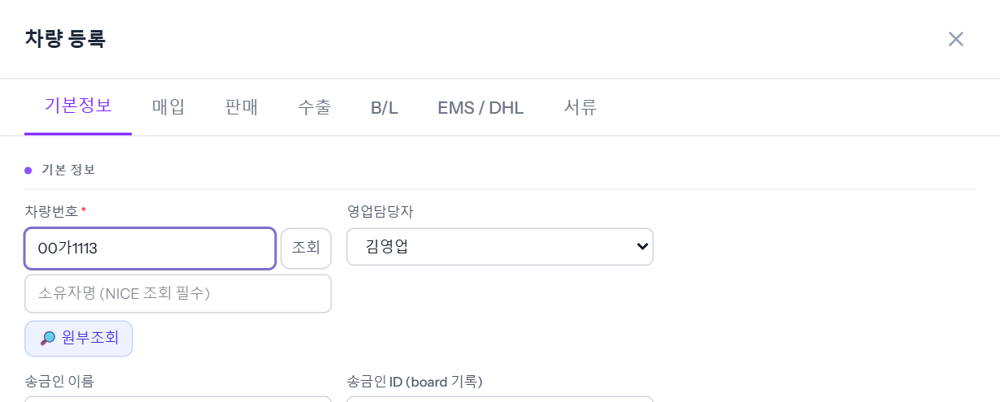
둘 다 비우면 「바이어를 지정하세요 — 판매 탭.」이 뜨며 등록되지 않습니다. 예시 차량은 「바이어 미정」으로 등록했습니다.
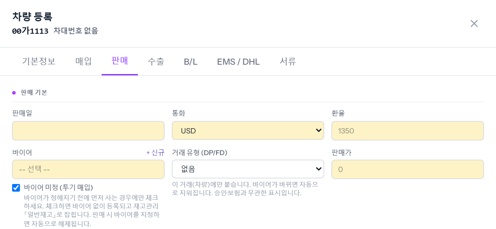
창 오른쪽 아래 [신규 등록]을 누르면, 보고 있던 탭의 내용을 한 번 더 보여 주는 확인 창이 뜹니다. 빈 항목은 「— 미입력」으로 보이며 비어 있어도 저장됩니다. 매입가·판매가 없이 여기까지만 넣어도 등록됩니다.
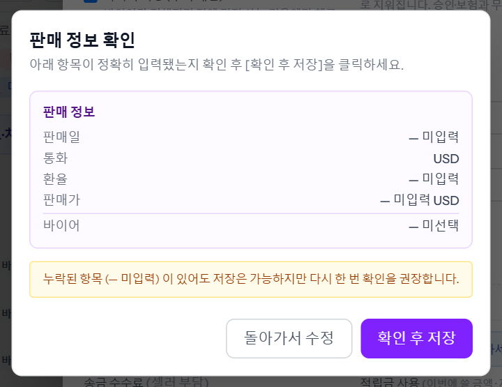
등록되면 창이 닫히지 않고 위쪽이 초록색 「등록 완료 · 편집 모드 — 다음 단계 진행」으로 바뀌며, 오른쪽 위에 다음 할 일이 뜹니다. 예시 차량은 「차량이 등록됐습니다. 다음 단계: 매입 — 매입가 미입력」이었습니다. 그 아래 줄(매입 › 말소 › 판매 › 입금 › 선적 › 통관 › B/L)은 이 차가 어디까지 왔는지 보여 줍니다.
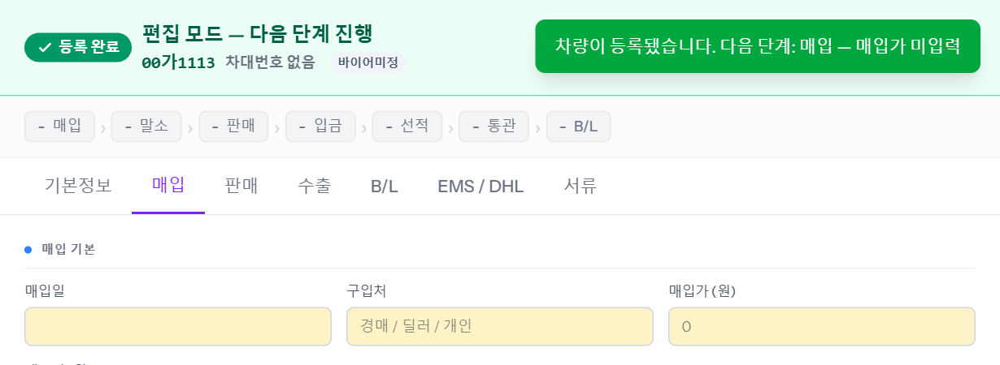
조회 버튼은 두 군데에 있고 하는 일은 같습니다. 차량번호와 소유자명이 둘 다 있어야 조회됩니다.
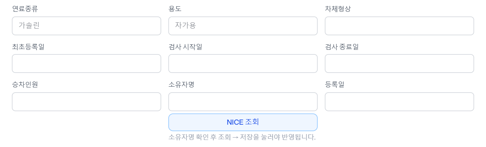
조회되면 브랜드·차종·연식, 차대번호, 연료, 최초등록일, 검사 기간, 배기량·중량 같은 칸이 채워집니다. 조회만으로는 저장되지 않습니다 — [수정 저장]을 눌러야 반영됩니다.
소유자명 없이 누르면 「소유자명을 먼저 입력하세요. (NICE 조회에 차량번호+소유자명 필요)」가 뜹니다. 조회가 실패하면 사유가 그대로 표시되고, 그때는 칸을 직접 채워도 됩니다(예시 차량은 브랜드·차종·연식·주행거리를 직접 적었습니다).
차량번호 아래 [🔎 원부조회]는 다른 버튼입니다. 차량번호만으로 원부 내용을 창으로 띄워 보여 줍니다.
※ 조회하면 실제 소유자의 개인정보가 불려 오기 때문에 예시 차량으로는 누르지 않았고, 조회 결과 그림도 싣지 않았습니다.
예시는 구입처 「딜러」, 매입가 10,000,000원, 매도비 300,000원입니다.
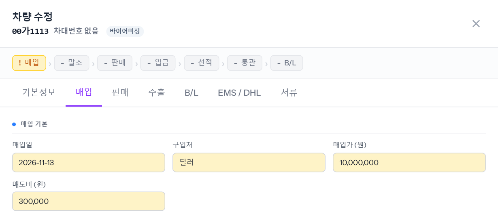
매입일을 꼭 확인하세요. 처음 등록할 때 매입가를 같이 넣으면 매입일이 오늘로 채워지지만, 이미 등록한 차에 나중에 매입가를 넣을 때는 채워지지 않습니다. 비워 두면 확인 창에 「매입일 — 미입력」으로 나옵니다.
매입 대금을 보낼 곳의 은행명 · 예금주 · 계좌번호를 넣습니다. 재무가 송금할 때 이 칸을 봅니다.
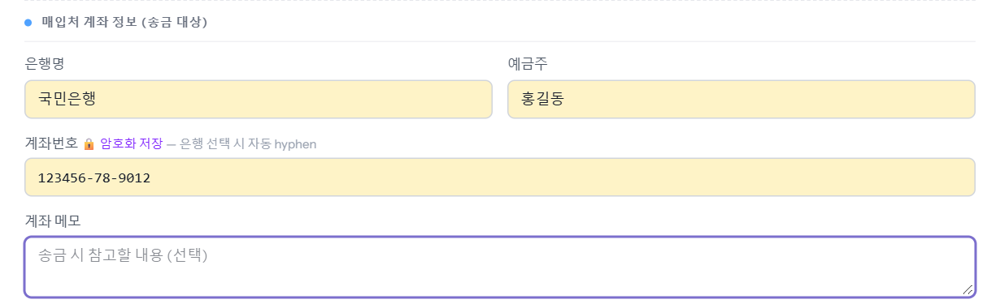
※ 그림의 예금주·계좌번호는 지어낸 예시입니다.
말소비·면허비·탁송비·캐리비·쇼링비·보험료·이전비·주차료·기타비1·기타비2 칸입니다. 새 차에는 말소비가 미리 들어 있고, 금액이 다르면 고칩니다. 나머지는 실제 금액이 나오면 그때 넣습니다.
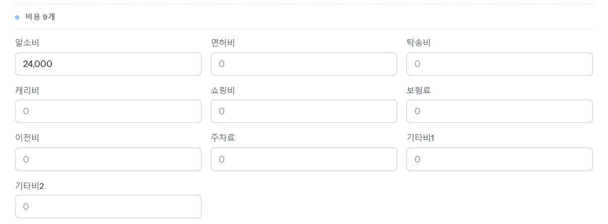
※ 미리 들어가는 비용은 회사 설정에 따라 다릅니다. 그림은 2026-11-13 로컬(공통 설정) 실측으로 말소비 24,000원입니다.
창 오른쪽 아래 [수정 저장]을 누르면 매입일·매입처·매입가·매도비·계좌를 한 번 더 보여 줍니다. 맞으면 [확인 후 저장], 틀리면 [돌아가서 수정]입니다. 저장되면 「차량 정보가 수정됐습니다.」가 뜨고 창이 닫힙니다. ([저장하고 계속]은 창을 닫지 않고 저장합니다.)
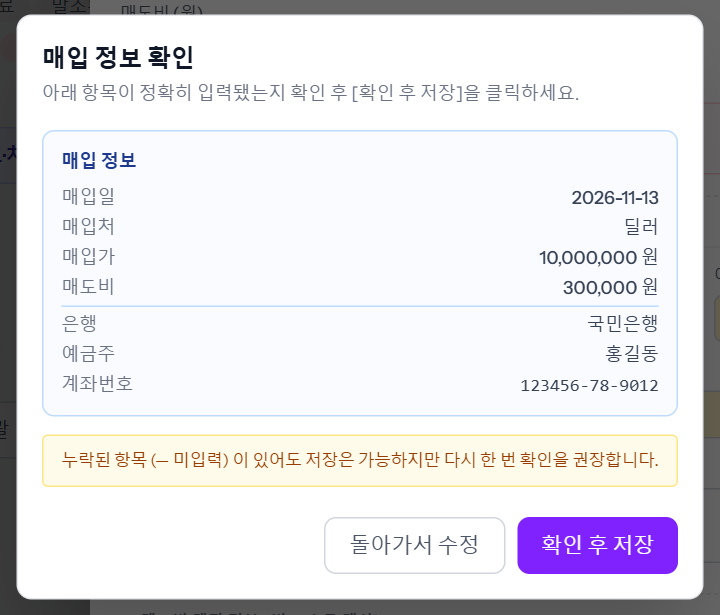
차를 다시 열어 매입 탭 아래쪽을 보면 「매입 미지급 요약」에 줄 돈이 계산돼 있습니다. 예시 차량은 총 매입액 10,300,000원(매입가 10,000,000 + 매도비 300,000), 지급 완료 0원, 미지급액 10,300,000원입니다.
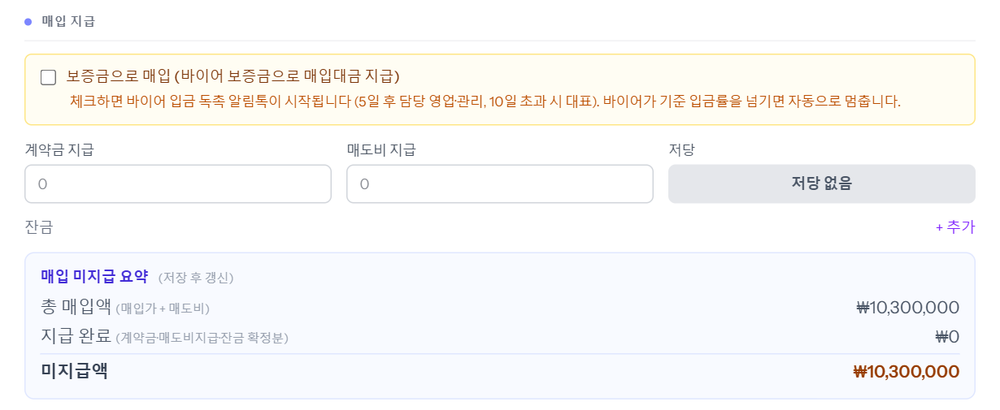
그 위 「매입 지급」(계약금 지급·매도비 지급·잔금)은 실제로 돈을 보낸 뒤 기록하는 칸입니다. 다음 씬 「매입 지급과 딜러 입금완료 알림」에서 이어집니다.
목록에는 진행상태 「매입중」, 차량번호 옆 「바이어미정」 표시로 올라와 있습니다. 미지급액이 0이 되면 「매입완료」로 바뀝니다.
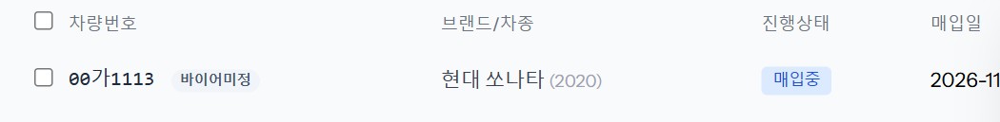